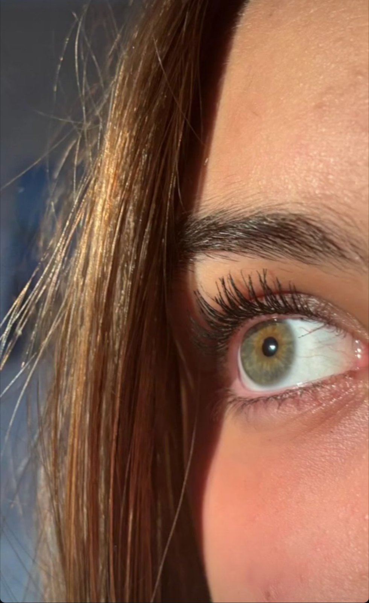
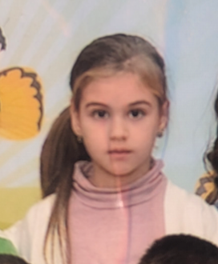
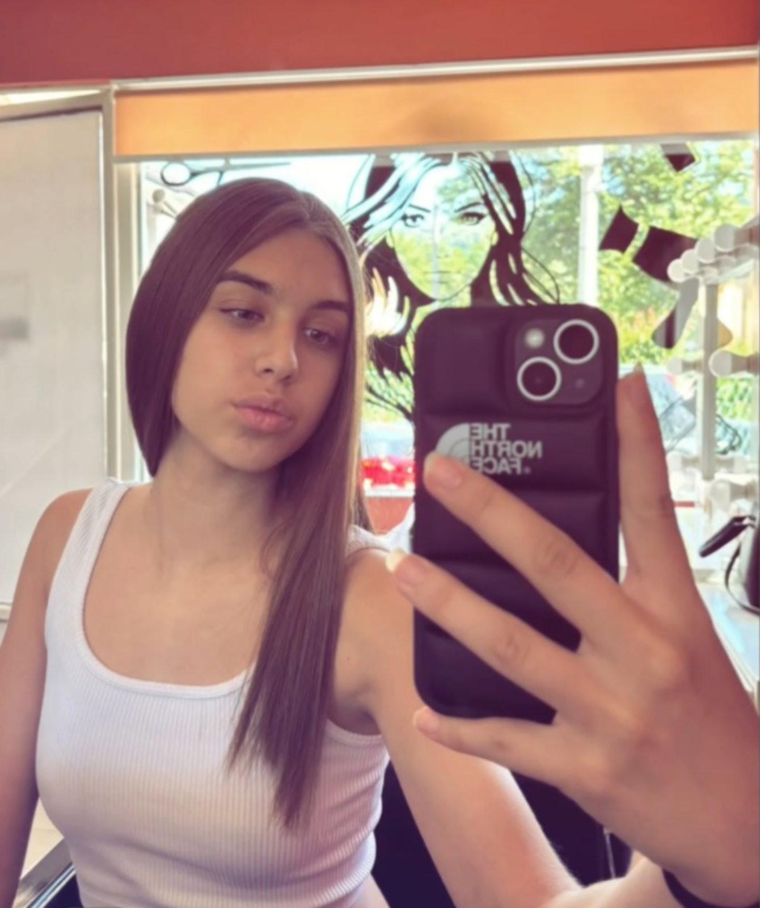

Sretan Rodjendan❤️❤️
Malo pismo❤️
SRETAN RODJENDAAN❤️❤️❤️.Ovo je samo jedan pokloin koji sam imao u planu, nije nista spec ali sam mislio da je saltko.I naravno morao sam napisati pjesmu:(NNIJE PISAO CHAT GPTTTTTTT!!!!)
sofke moja mala
tri mjeseca nije sala
ta je sansa mala
da sam te smuvao nakon sest mjeseci punih budalda
dakic nosi metlu na glavi
utripovo se da je frajer pravi
jekic ima problem u glavi
nervira me njegov glas mali
zivoin koji je zaostao u rastu
lupi miki foru masnu
mali patuljak jovic
koji samo radi za bozic
six-seven kaze svako
pa ih odma lupim sakom
stefan kad mu kazes molim
odgovori ti sa opalim te golim
pusti budale masne
sofija je prioritet zna se
kad ti rodjendan pozelim ja
znaj da te volim ja ❤️

Najljepse oci na svijetu
Najsladja i najsmjesnija osoba

Najsaldje djete

Kosa vrijedna miliona
Tjelo grcke boginje

...